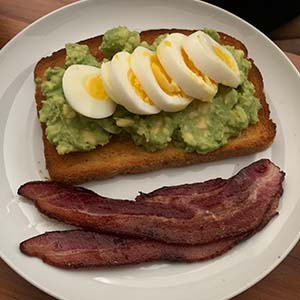

Heewon's Simple Recipes!
1.Avocado Toast

Ingredients
- 1/2 Small Avocado
- 1 Slice of Weat Bread
- 1 Egg
- 1/2 Tablespoon of Lemon Juice
- 1/8 Teaspoon of Salt and Pepper
- 1/2 Teaspoon of Extra-Virgin Olive Oil
- Bacon
How to Make It
- In a small bowl, combine avocado, lemon juice, salt, and pepper.
- Gently mash with the back of a fork.
- Bake a bacon as much as you want.
- When the water boils, put an egg and wait for 8mins.
- Top toasted bread with mashed avocado mixture. Drizzle with olive oil and sprinkle over desired toppings.
2.Alio-e-Olio
Ingredients
- 1 Pound of Spaghetti Noodle
- 3 Table Spoon of Minced Garlic
- 1/4 Teaspoon of Red Pepper
- 1/8 Teaspoon of Salt and Pepper
- 1/2 Cup of Extra-Virgin Olive Oil
How to Make It
- Bring a large pot of lightly salted water to a boil. Cook spaghetti in the boiling water about 12 minutes.
- Drain and transfer to a pasta bowl.
- Combine garlic and olive oil in a cold skillet.
- Cook over medium heat to slowly toast garlic, about 10 minutes. Reduce heat to medium-low when olive oil begins to bubble.
- Cook and stir until garlic is golden brown, about another 5 minutes. Remove from heat.
- Serve pasta topped with the remaining Parmigiano-Reggiano cheese.
3.Steak
Ingredients
- 1 Slice of New York Steak
- 1/8 Teaspoon of Salt and Pepper
- 1/2 Tablespoon of Extra-Virgin Olive Oil
How to Make It
- Bring a pan and start heating on medium fire.
- Put olive oil.
- When the pan is heated, put the meat in.
- Cook over medium heat to slowly toast the surface of the meat, about 5 minutes.
- Flip to the other side.
- Place on a plate with salad or sidedishes and eat.